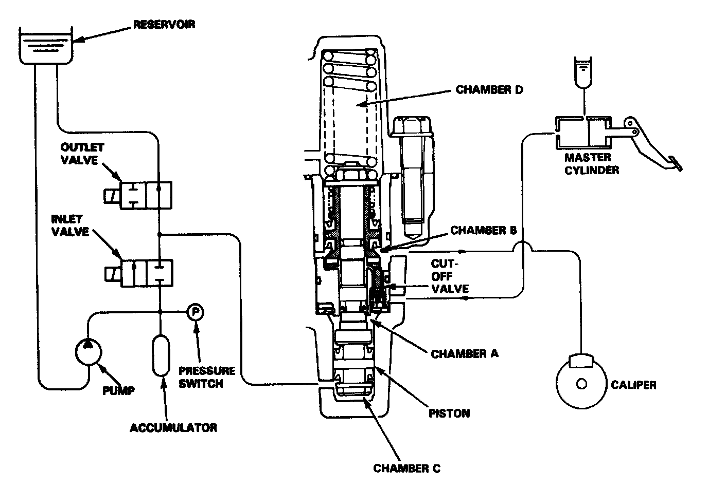
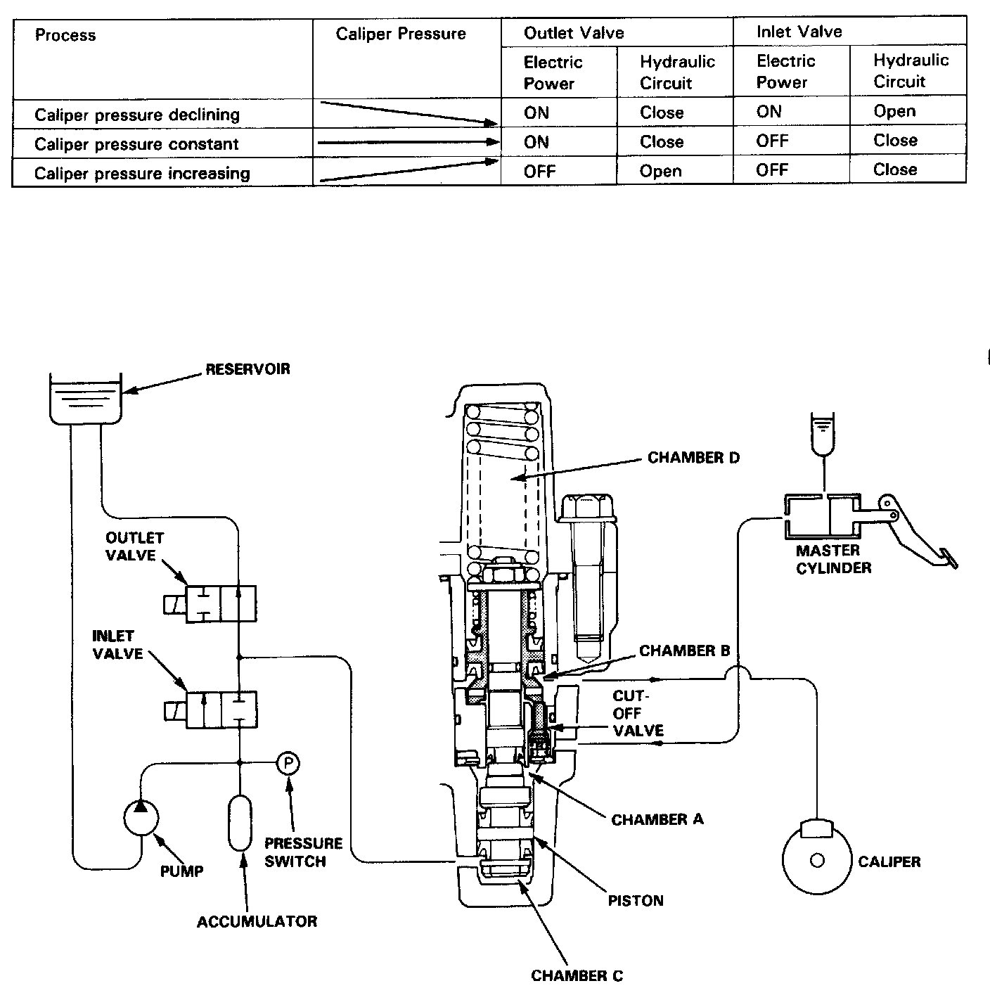
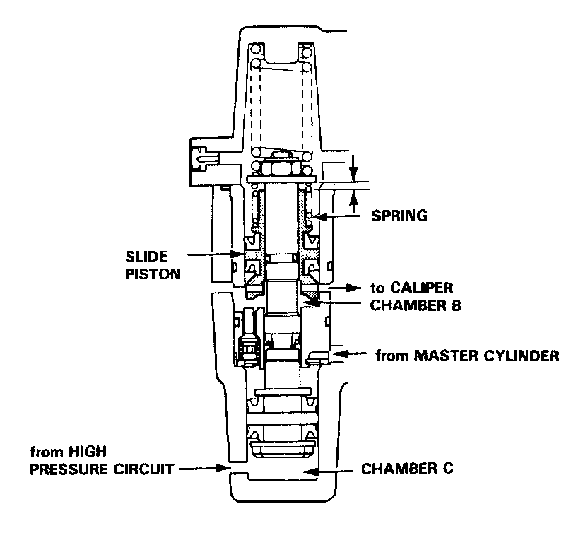
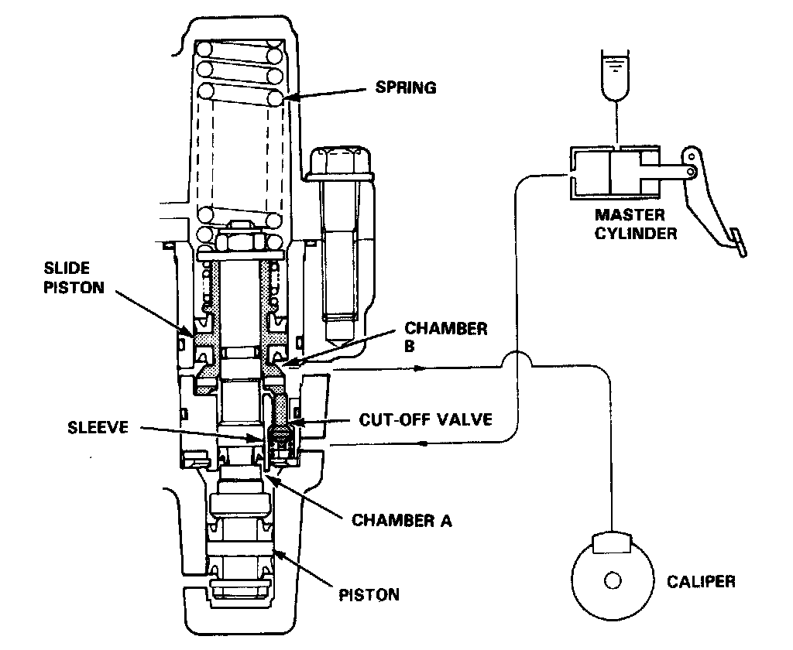
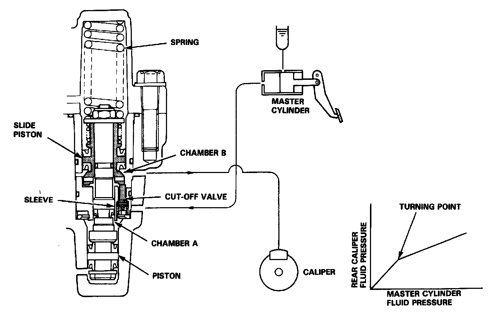

Operation

Operation
1. Ordinary Braking Function
In ordinary brake operations, the cut-off out valve in the modulator is open to transmit the hydraulic pressure from the master cylinder to the brake calipers via chamber A and chamber B.
Chamber C is connected to the reservoir through the outlet valve which is normally open. It is also connected to the hydraulic pressure source (pump, accumulator, pressure switch, etc.) via the inlet valve which is normally closed. Chamber D serves as an air chamber. Under these conditions, the pressures of chambers C and D are maintained at about atmospheric pressure, permitting regular braking operations.

If brake inputs (force exerted on brake pedal) are excessively large and a possibility of wheel locking occurs, the control unit operates the solenoid valve, closing the outlet valve and opening the inlet valve. As a result, the high pressure is directed into chamber C, the piston is pushed upward, causing the slide piston to move upward and the cut-off valve to close.
As the cut-off valve closes, the flow from the master cylinder to the caliper is interrupted, the volume of chamber B, which is connected to the caliper, increases, and the fluid pressure in the caliper declines.
When both of the two valves, inlet and outlet, are closed (when only the outlet valve is activated) the pressure in the caliper is maintained constant.
When the possibility of wheel locking ceases, it is necessary to restore the pressure in the caliper. The solenoid valve is therefore turned off (outlet valve: open, inlet valve closed).

2. Slide Piston Function
When the car is used on rough roads where the tires sometimes lose adhesion, the anti-lock brake system may function excessively, causing an excessively large volume of brake fluid to flow into the chamber C. As this occurs, the piston is moved excessively, resulting in an abnormal loss of pressure in chamber B. In order to overcome this problem, the slide piston is kept in a proper position by spring force to prevent the pressure in chamber B to becoming negative.
3. Kickback
When the anti-lock brake system is functioning, the piston moves upward, the volume of chamber B increases, and the fluid pressure on the caliper side is reduced. At the same time, the volume of chamber A is reduced and the brake fluid is returned to the master cylinder. When the brake fluid is pushed back to the master cylinder, the driver can feel the functioning of the anti-lock brake system because the brake pedal is kicked back.
4. PCV (Proportioning Control Valve) Function
In the modulator for the rear wheels, the diameters of the piston and the slide piston are distinctly different. This provides a PCV (Proportioning Control Valve) function to prevent the rear wheels from locking during an emergency stop.

(1) Before the Turning Point
(1)When the fluid pressure from the master cylinder is below the turning point, the cut-off valve is always pushed d6wnward by the force of the slide piston and its spring. Under these conditions, there is a gap between the cut-off valve shoulder and the sleeve. Chamber A and chamber B are therefore connected through the gap. The pressure from the master cylinder flows into the rear calipers through chamber A and chamber B.

(2) When the fluid pressure from the master cylinder reaches the turning point, the force on the slide piston overcomes the force of spring, causing the slide piston to travel upward.
The cut-off valve, previously being in contact with the bottom of the slide piston, then moves upward and the cut-off valve shoulder hits the sleeve, blocking the fluid passages (the fluid pressure at this point is called the turning point).
(2) After the turning point
As the fluid pressure from the master cylinder further increases, the pressure in chamber A becomes higher, causing a force to push down the large diameter portion of the piston. Consequently, the slide piston comes down, the cutoff valve is pushed downward by the bottom of the slide piston, allowing chambers A and B to connect momentarily. As this occurs, pressure in chamber B increases, the slide piston is pushed upward, the cut-off valve goes up, and the connection between chamber A and chamber B is blocked again. As described above, when the pressure in the master cylinder is above the turning point, the slide piston reduces the pressure in the rear caliper to the prescribed pressure by repeating these processes.